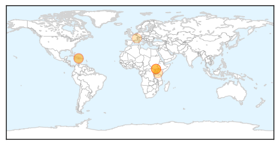
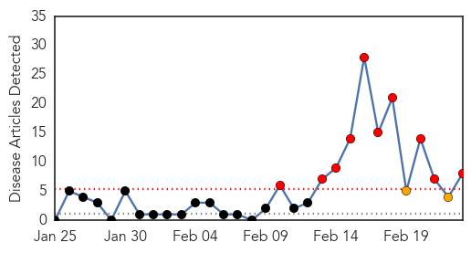
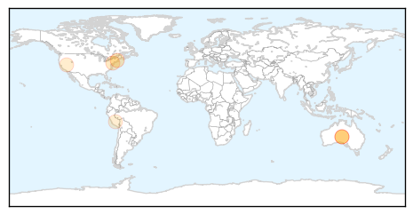
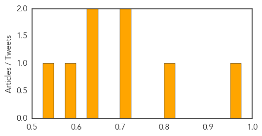

Cholera
30-Day Web Trend
0 alerts, 0 warnings

30-Day Twitter Trend
7 alerts, 0 warnings

Article Locations
Article Confidences

Top Articles:
- 0.998
- Interview with Pedro Medrano Rojas, UN Senior Coordinator for the Cholera Response in Haiti
- 0.983
- What's Working: Public Health Progress Since the Haiti 2010 Earthquake
- 0.975
- Health partners appeal for funds to meet South Sudan’s priority needs in 2015 - South Sudan
- 0.940
- It’s sad Kenyans still die from cholera that can be avoided by washing hands - Kenya
- 0.922
- South Sudan: Health partners appeal for funds to meet South Sudan's priority needs in 2015
- 0.868
- Why cholera is spreading fast in Migori and Homa Bay counties - Kenya
- 0.835
- Drug-Resistant Bacteria: Part I
Top Tweets:
- 0.936
- RT: cholera is still a problem in Haiti - cases and deaths every week. @pih haiti saw >1300 cases in Nov/Dec 2014. More res…
- 0.797
- Outbreaks of cholera in the time of Ebola: pre-emptive action needed http://t.co/nS9eoexMyx
Hepatitis
30-Day Web Trend
10 alerts, 2 warnings

30-Day Twitter Trend
0 alerts, 0 warnings

Article Locations
Article Confidences
Top Articles:
- 0.951
- Health dept asks police to report jaundice cases
- 0.810
- Pathogens, Diseases Long Shared On Unclean Scopes And Other Medical Instruments
- 0.723
- Lawsuits Likely to Follow 'Superbug' Scare
- 0.719
- Department of Agriculture statistics show imported food tests cut back
- 0.638
- Up to 450k could have eaten hepatitis A contaminated berries grown in China
- 0.629
- Frozen berries involved with Hepatitis A to be stopped at Australian border
- 0.580
- WHO urges shift to single-use smart syringes
- 0.544
- Scientists hope an AIDS vaccine lies in llamas
Top Tweets:
-
No tweets found for Feb 23, 2015